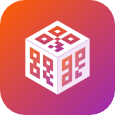

Qube
📱 Mi a Qube?
A Qube a gyártósori munkát segítő telefonos alkalmazás. Három fő funkciója:
- IC generátor – nyersanyag-azonosító QR kódok készítése.
- MES terminál – belépés a MES terminálba egy QR kód lecsippantásával.
- Csomagoló kód – a saját csomagoló kódod QR kódként.
Csak telefonra készült, álló helyzetben. Tableten és számítógépen is megnyílik, de a kezelőfelület telefonra van optimalizálva.
🧩 Mi az a PWA?
A Qube egy PWA (Progressive Web App): weboldalként működik, de a telefonra alkalmazásként telepíthető.
- Nem kell App Store vagy Google Play – közvetlenül a böngészőből telepíthető.
- Saját ikonja lesz a kezdőképernyőn, és teljes képernyőn, böngészősáv nélkül nyílik meg.
- Alig foglal helyet, és internet nélkül is elindul (lásd lent).
- A frissítéseket magától letölti – nem kell újratelepíteni.
🍎 Telepítés iPhone-ra
- Nyisd meg a Qube linkjét a Safari böngészőben. (Chrome-ból vagy más böngészőből iPhone-on nem telepíthető megfelelően.)
- Koppints alul a Megosztás ikonra (négyzet felfelé mutató nyíllal).
- Görgess le, és válaszd a „Főképernyőhöz adás” lehetőséget.
- Koppints a Hozzáadás gombra.
- Ezután mindig a kezdőképernyőn lévő Qube ikonról indítsd.
🤖 Telepítés Androidra
Chrome böngészővel:
- Nyisd meg a Qube linkjét a Chrome-ban.
- Koppints a jobb felső ⋮ (három pont) menüre.
- Válaszd az „Alkalmazás telepítése” vagy a „Hozzáadás a kezdőképernyőhöz” pontot.
- Erősítsd meg a Telepítés gombbal.
Samsung Internet böngészővel: menü (☰) → Oldal hozzáadása → Kezdőképernyő.
Előfordulhat, hogy a Chrome magától felajánlja a telepítést egy alsó sávban – ilyenkor elég arra koppintani.
👤 Azonosítás és fiók
- Nincs jelszó és belépési oldal. Első indításkor csak a neved és a törzsszámod kell megadni – ez alapján azonosít az app.
- Egy törzsszámhoz egy fiók tartozik. Új fiók mindig Operátor szerepkörrel indul.
- A neved a kezdőlapon a Profil menüben módosíthatod, a törzsszámot csak admin javíthatja.
- Telefoncsere vagy a böngészőadatok törlése után az app új eszközként lát. Ilyenkor az „Összekapcsolás folyamatban” felirat jelenik meg: szólj egy vezetőnek, aki összekapcsolja a régi fiókoddal. Ezután a szerepköröd is visszajön, az oldal magától továbblép.
🛡️ Szerepkörök
| Operátor | IC generálás, MES terminál, csomagoló kód |
|---|---|
| Műszakvezető | + IC statisztika, felhasználók megtekintése |
| Csoportvezető | + IC lista szerkesztése, felhasználók kezelése (szerepkör, letiltás) |
| Admin | Minden, beleértve a szerepkörök szerkesztését és a fiókok összekapcsolását |
A pontos jogosultságokat az admin állíthatja be, ezért nálatok eltérhetnek.
⚡ IC generátor
- Válaszd ki a területet (ESS / WSS), az IC-t és a mennyiséget (max. 5000), majd Generálás.
- Két QR kód jelenik meg – ezeket kell lecsippantani.
- Bezárás után a mezők kiürülnek. Az Utolsó generálás kártyára koppintva ugyanaz a két QR újra megnyitható (ez nem számít új generálásnak).
- Vezetőknek: Lista (IC-k felvétele, törlése, importálása) és Statisztika (napi, havi, IC-nként).
💻 MES terminál
- Egyszer add meg a MES felhasználóneved és jelszavad, utána a Belépő QR megjelenítése gombbal egy csippantással beléphetsz.
- Belépés módja: „Egy QR kód” – egy csippantás. Ha így nem lép be (pl. @ vagy # van a jelszavadban), válaszd a „Két QR kód” módot: az első kitölti az adatokat, a második belép (F4).
- Belépés után TAB: belépés után a következő mezőre lép. Kikapcsolható.
- A QR a beállított idő után magától eltűnik (15 mp – 2 perc, vagy csak bezáráskor).
📦 Csomagoló kód
- Egyszer add meg a számkódodat, utána a QR megjelenítése gombbal bármikor előhívható.
- A QR pontosan a számot tartalmazza.
- Az eltűnési idő itt is beállítható.
📶 Internet nélkül
Ha a Qube-ot egyszer már megnyitottad internettel, utána internet nélkül is elindul.
| ✅ Működik | MES belépő QR, csomagoló kód QR, IC generálás (a telefonon tárolt IC listából), utolsó generálás visszanézése |
|---|---|
| ⏳ Később tölti fel | Az IC generálások naplója – „feltöltésre vár” jelzéssel, és amint van net, magától elküldi |
| ❌ Internet kell | Első regisztráció, IC lista módosítása, statisztika, felhasználók kezelése, frissítések letöltése |
🔒 Adatkezelés – mi hol tárolódik?
Csak a telefonodon (soha nem kerül szerverre):
- MES felhasználónév és jelszó
- Csomagoló kód
- Az utolsó IC generálás és a beállításaid (téma, hang, rezgés, QR idők)
A szerveren (Google Firebase, a működéshez szükséges minimum):
- Név, törzsszám, szerepkör, regisztráció és utolsó aktivitás ideje
- IC lista
- IC generálások naplója: ki, mikor, melyik IC-ből, mennyit – és ebből a statisztika
🔄 Frissítések
- Új verzió esetén a fejlécben megjelenik a sárga 🔄 Frissítés gomb – koppints rá, és az app újratölt az új verzióval.
- Amíg nem nyomod meg, a régi verzió zavartalanul működik tovább.
🛠️ Hibaelhárítás
- Nem tölt be, csak a „Betöltés…” látszik
- Várj pár másodpercet: megjelenik a Gyorsítótár törlése gomb. Ha az sem segít, nyisd meg a reset oldalt – a bejelentkezésed és a fel nem töltött generálások megmaradnak.
- „Összekapcsolás folyamatban”
- Az app új eszközként lát (új telefon vagy törölt adatok). Szólj egy vezetőnek, aki összekapcsolja a fiókodat.
- A MES terminál nem léptet be
- Állítsd a belépés módját „Két QR kód”-ra. Ellenőrizd a mentett felhasználónevet és jelszót az „Adatok módosítása” gombbal.
- Az olvasó nem olvassa a QR-t
- Növeld a telefon fényerejét, kerüld a tükröződést, és tartsd a telefont 10–20 cm-re az olvasótól.
- Nem látok egy modult a kezdőlapon
- A szerepköröd nem ad hozzá jogot. Szólj a csoportvezetődnek vagy az adminnak.
Fejlesztette: Kovács Gábor